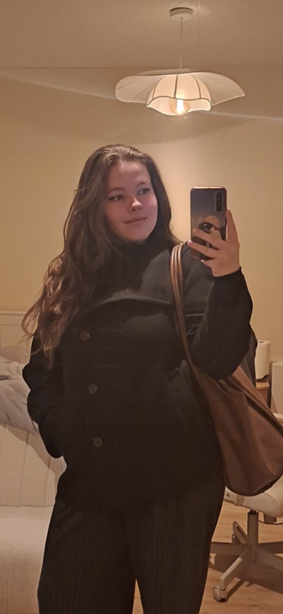

Frontend Design & Development
Lynn Bolderman
Leuk dat je een kijkje neemt op mijn portfolio! Ik ben derdejaars student Communication & Multimedia Design aan de Hogeschool van Amsterdam en rond momenteel de minor Web Design & Development af. Ik haal veel energie uit het bouwen van toegankelijke, gebruiksvriendelijke en interactieve digitale ervaringen. Van slimme UX-oplossingen tot vloeiende animaties: ik vind het geweldig om ontwerpen tot leven te brengen in code.
Beschikbaar voor stage
Projecten
Een selectie van mijn werk, van recente projecten tot eerdere opdrachten.
Over Mij

Mijn naam is Lynn Bolderman. Ik woon in Hoofddorp en studeer Communication and Multimedia Design aan de HvA, waar ik nu in het 3e jaar zit. Momenteel ben ik bezig met het afronden van de minor Web Design and Development. Ik heb het hier onwijs naar mijn zin en ben er echt achter gekomen dat frontend development de kant binnen CMD is waar ik me in wil verdiepen en ontwikkelen.
Wat mij aanspreekt aan frontend development is de combinatie van techniek, creativiteit en gebruikerservaring. Ik vind toegankelijkheid daarbij ontzettend belangrijk. Het web is er voor iedereen en ik geloof dat iedereen digitale producten moet kunnen gebruiken, ongeacht ervaring, mogelijkheden of beperkingen. Daarom probeer ik toegankelijkheid altijd mee te nemen in mijn ontwerp- en ontwikkelproces.
Daarnaast word ik enthousiast van interactieve interfaces en goed uitgewerkte animaties. Met CSS en GSAP experimenteer ik graag om websites meer karakter en gebruiksgemak te geven. Ik vind het leuk om te onderzoeken hoe beweging kan bijdragen aan de ervaring van een gebruiker zonder af te leiden van de inhoud.
De komende jaren wil ik mezelf verder ontwikkelen als frontend developer. Ik wil mijn kennis van JavaScript verdiepen, meer ervaring opdoen met moderne frameworks en blijven leren hoe ik toegankelijke en schaalbare websites kan bouwen. Tegelijkertijd wil ik mijn achtergrond in UX en design blijven inzetten om techniek en gebruiksvriendelijkheid met elkaar te verbinden.
Mijn Pad
Waar het begon
Al van jongs af aan had ik een fascinatie voor apps, websites en digitale producten. Ik was altijd nieuwsgierig naar hoe dingen werkten en vond het interessant hoe technologie het dagelijks leven kon verbeteren. Hoewel ik al vroeg interesse had in programmeren, leek code mij lange tijd iets ingewikkelds waar ik niet aan durfte te beginnen. Toch bleef die interesse altijd aanwezig.
Propedeuse gehaald
Tijdens mijn eerste studiejaar bij CMD in Utrecht heb ik vooral onderzocht welke richting binnen het vakgebied het beste bij mij paste. Hier heb ik een sterke basis gelegd in design thinking, UX-design, UX-onderzoek en digitale vormgeving. Ook heb ik gewerkt met tools zoals Figma, Photoshop en WordPress en ervaring opgedaan met het doen van doelgroeponderzoek en gebruikerstesten en projecten maken voor echte opdrachtgevers.
In deze periode ontdekte ik dat ik veel plezier haalde uit het ontwerpen van digitale producten en het begrijpen van gebruikers. Daardoor wist ik dat ik me verder wilde ontwikkelen binnen UX en UI. Ik ben gaan kijken naar andere scholen en zag dat de HvA hier veel aandacht aan besteedt in hun curriculum. Daarnaast zou ik ook les gaan krijgen over frontend development, wat voor mij een perfecte kans bood om toch wat te gaan doen met de wens die ik al van jongs af aan had. Om die reden besloot ik de overstap te maken naar CMD aan de Hogeschool van Amsterdam.
Ingestroomd in jaar 2 - Nu
Bij CMD Amsterdam heb ik mijn kennis verder verbreed en verdiept. Ik werkte aan projecten op het gebied van UX/UI-design, service design en frontend development. Zo heb ik onder andere gewerkt aan een service design-project voor het Wereldmuseum Amsterdam.
Tijdens deze periode werd bevestigd dat frontend development het onderdeel van CMD is waar ik de meeste energie van krijg. Hier heb ik uiteindelijk de keuze gemaakt om me actief te richten op code en heb ik het vertrouwen gevonden om mezelf verder te ontwikkelen als developer. Binnen de minor Web Design & Development werk ik dagelijks met HTML, CSS en JavaScript en leer ik hoe ik ontwerpen kan vertalen naar toegankelijke en interactieve websites.
Contact
Wil je samenwerken of meer weten? Neem gerust contact op!